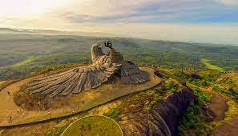
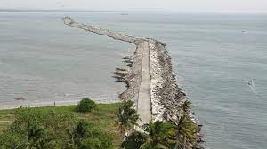
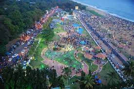

-

JATAYU EARTH'S CENTRE
You will certainly get mesmerised with Kollam’s latest tourist attraction, the Jatayu Earth’s Center that hosts the world’s largest bird sculpture. Spanning over 65 acres across four hills, this is the State’s first ever BOT (Build-Operate-Transfer) tourism. The monumental statue of Jatayu resting high up the hill catches your attention even from afar on your way to Chadayamangalam in Kollam district. Jatayu is a legendary bird from the Indian epic Ramayana.
You can reach the hilltop using a cable car. A multitude of experiences await the traveller in Jatayu Rock. One such is the museum and the 6D theatre inside the sculpture. You can even have a hele-taxi experience from here!
All adventure junkies, this is your perfect weekend getaway! Engage in adventurous games in the backdrop of breathtaking views of nature. Whether it be Burma bridges, commando nets, log walk, vertical ladder, chimney climbing or side joola, choose your pick and let the adrenaline rush through the body.
-

THANGASSERI
The British called this delightful destination ‘Dutch Quilon’ while the locals refer to it as 'gold village’. Today, the seaside town of Thangasseri is among the most historically significant locations in all of God’s Own Country. It is located 5 km away from Kollam town, and has a series of forts and churches that regularly attract a large amount of people. The Portuguese and the Dutch were responsible for a majority of them, and they give one a glimpse at the initial phase of their time as rulers of the place. Its legendary Lighthouse was built in 1902 and stands 144 ft. high, and can be seen over 13 miles away at sea. Observing the simultaneous rise of the sun and the moon while cruising on the popular Lighthouse Road offers you one of the finest visuals in the entire State.
-

KOLLAM BEACH
An array of beach activities attracts huge flocks of tourists throughout the year to thepristine Kollam Beach. The panoramic visuals of the Arabian Sea are enchanting. A port city and one time bustling harbour for Chinese ships and trade, Kollam Beach is home to Chinese fishing nets, Chinese water pots and sampan-like boats even to this day. Go over for a cultural and spiritual joyride that shall stay with you forever.